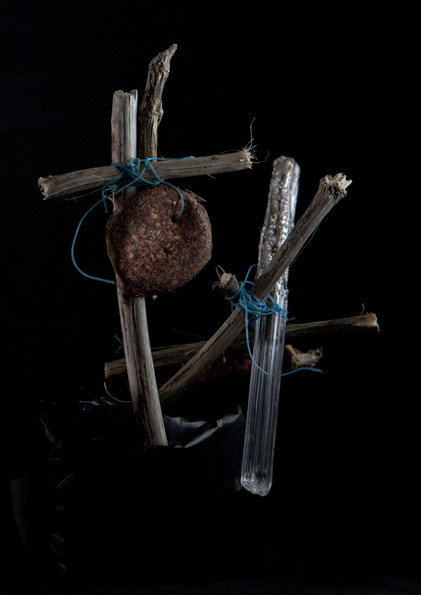
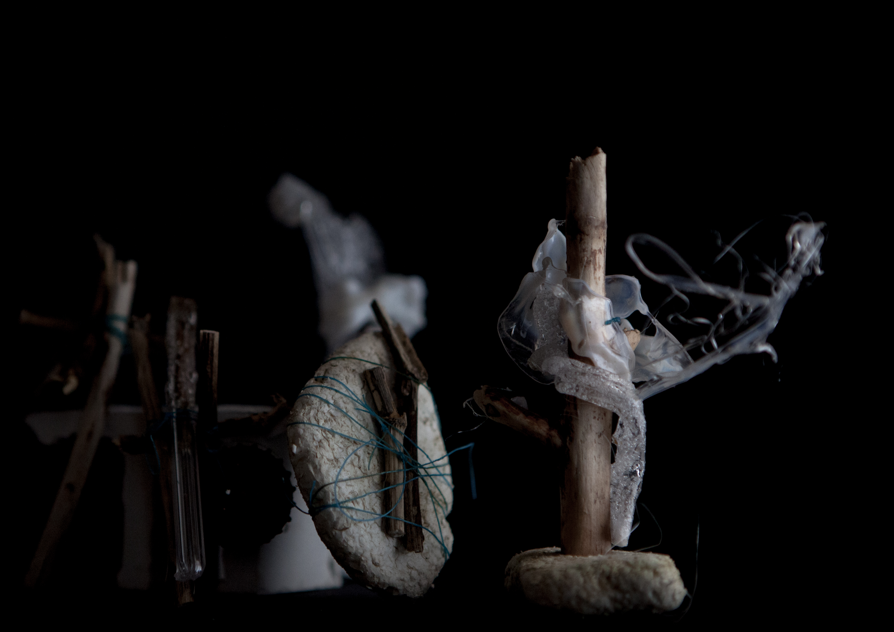
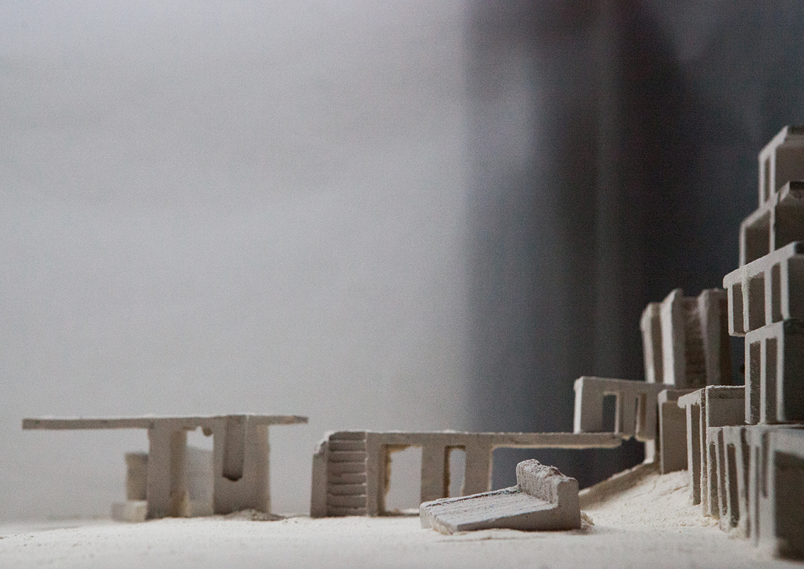
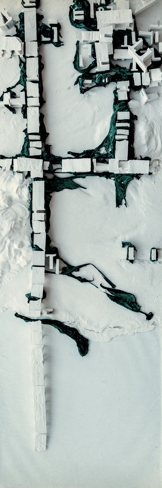

Sacred Matter : A Utopian City on the Beach
They live on the remains of the world and the sea is the one bringing it to them.
In this modern Eden, everything is offered to the dériviens. All the construction elements, their furniture, their clothes, their machines come from what they collected on the beach. They live only on harvests and in a constant dialogue with the horizon of the ocean. Like the immemorial time when nature offered all its wonders to humans in abundance, this new society offers what humankind has made of nature.
 


